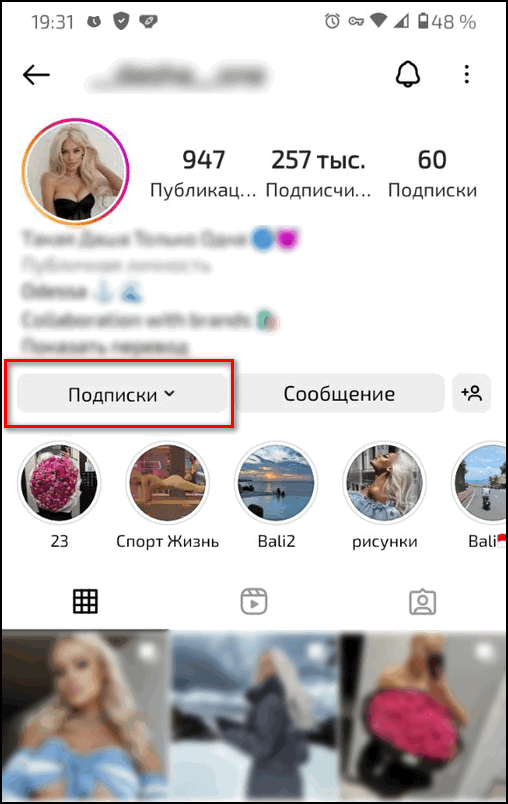
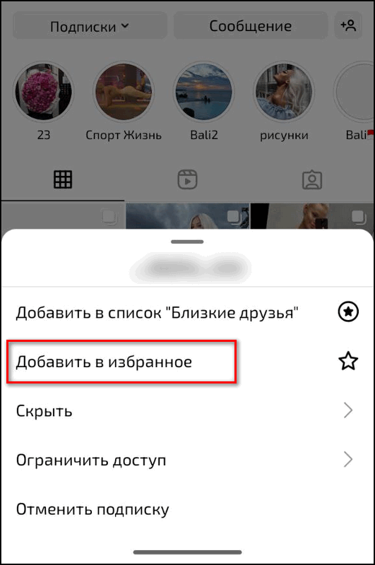
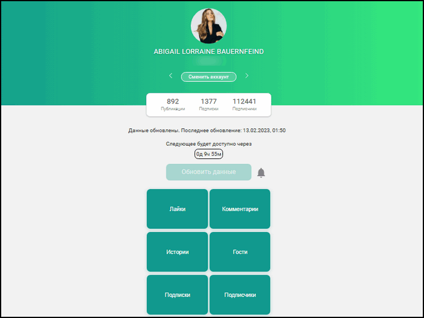
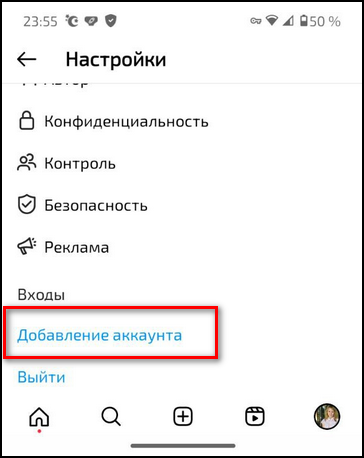
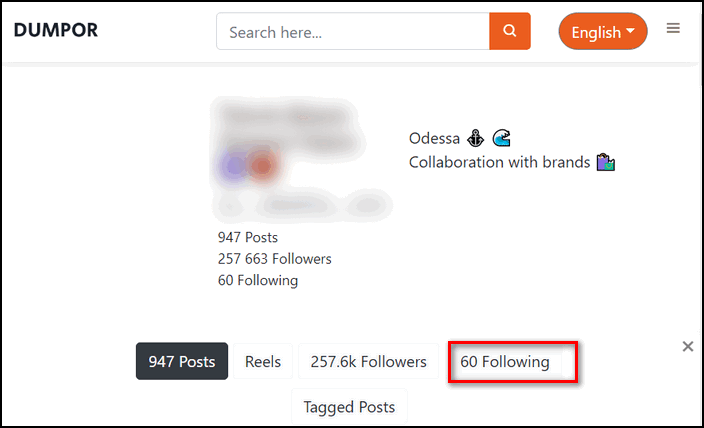

Как узнать на кого подписался человек в Инстаграме: 3 способа

Узнать на кого подписан человек в Инстаграме* можно через стандартную проверку, зайдя к этому человеку в профиль. Но если такой возможности нет – использовать дополнительные сервисы, приложения.
Обновления в подписках Инстаграма*
В социальной сети регулярно проходят обновления, направленные на повышение конфиденциальности данных. К этому списку добавилось скрытые подписок путем изменения статуса профиля. Способы, как скрыть подписки:
- сделать аккаунт приватным;
- заблокировать круг пользователей, которые могут заинтересоваться подписками;
- добавлять интересные страницы в закладки.
Чтобы сохранить страницу в закладки в Инстаграме*, нужно:
- Зайти в интересующий профиль – нажать по кнопке: «Подписки».

- В выпадающем списке нажать по значку со звездочкой «Добавить в избранное».

Далее, пользователь сможет регулярно посещать эту же страницу, чтобы посмотреть обновления. Также, человека который часто посещает аккаунт, можно заблокировать и тогда у него не будет доступа к публикациям, историям, перечню подписчиков и подписок.
№1 Через Инсташпиона - лучший вариант
Инсташпион – это сервис, направленный на слежку за страницами других пользователей. С его помощью можно посмотреть на кого подписан человек, кто ему ставит лайки и какие Истории были опубликованы недавно. Плюсом будет то, что просмотр анонимен и владелец страницы не узнает, что за ним следят.
Как посмотреть подписчиков и подписки через Инсташпиона:
- Зайти в сервис – нажать по кнопке: «Попробовать бесплатно».

- Ввести никнейм нужного пользователя – выбрать аккаунт из списка.
- Подождать пока прогрузится база данных – перейти во вкладку «Подписки».
Теперь станут доступны все страницы на которые подписан пользователь. Слежку можно сделать регулярной, оформив подписку на сервис. Можно наблюдать за тем, на кого подписывается и кто добавлять в друзья взаимно.
Кроме этого, в Инсташпионе доступен просмотр подписчиков. Это не всегда люди, на которых владелец страницы подписан в ответ. Доступен список лайков: кто ставит отметки «Мне нравится» чаще остальных, кому отправляет владелец аккаунта. Секретный раздел: «Гости», где можно посмотреть кто посещает страницу регулярно. И все это без ввода пароля, уведомления владельца учетной записи о слежке.
№2 Узнать на кого подписан: вручную
Отследить на кого подписался в Инстаграм* можно вручную, если создать фейковую страницу. Это может быть аккаунт интернет-магазина, фотографа или тематический блог. Главное, чтобы владелец профиля, за которым организована слежка, не догадался о тои, что за ним наблюдают. Для создания другой учетной записи нужно:
- Перейти в настройки текущего аккаунта – выбрать внизу: «Добавить еще».

- Выбрать: «Зарегистрировать новую страницу» - ввести никнейм, придумать пароль.
- Загрузить в первый день аватарку и добавить описание.
- В течение недели загружать изображения, искать подписчиков.
После того, как страница будет подготовлена – перейти в аккаунт к искомому человеку и оформить подписку. Это можно сделать, даже с приватным профилем, отправив заявку в друзья.
№3 Другие сервисы
К списку сервисов, где не нужно вводить пароль, чтобы посмотреть подписки, можно отнести:
- dumpoir. Просмотр публикаций, видео и подписчиков. Бесплатный просмотр страницы;

- zengram. Есть платная и бесплатная подписка на сервис;
- snoopreport. Постоянное наблюдение за страницей, но платное.
Почему список подписок недоступен в Инстаграме*
Перечень подписок может быть недоступен в нескольких случаях: если владелец страницы заблокировал или если профиль приватный. В последнем случае можно воспользоваться регистрацией еще одной учетной записи. Определить, что заблокировали возможно по таким признакам:
- не отображается количество публикаций, хотя раньше их было много;
- отсутствует информация в биографии.
Также, если страница не была сохранена в закладках, то отыскать её при помощи стандартного поиска не получится. Инстаграм* постепенно вводит дополнительные настройки по улучшению конфиденциальности. Поэтому в скором времени стоит ожидать функцию, которая полностью скроет список подписок.